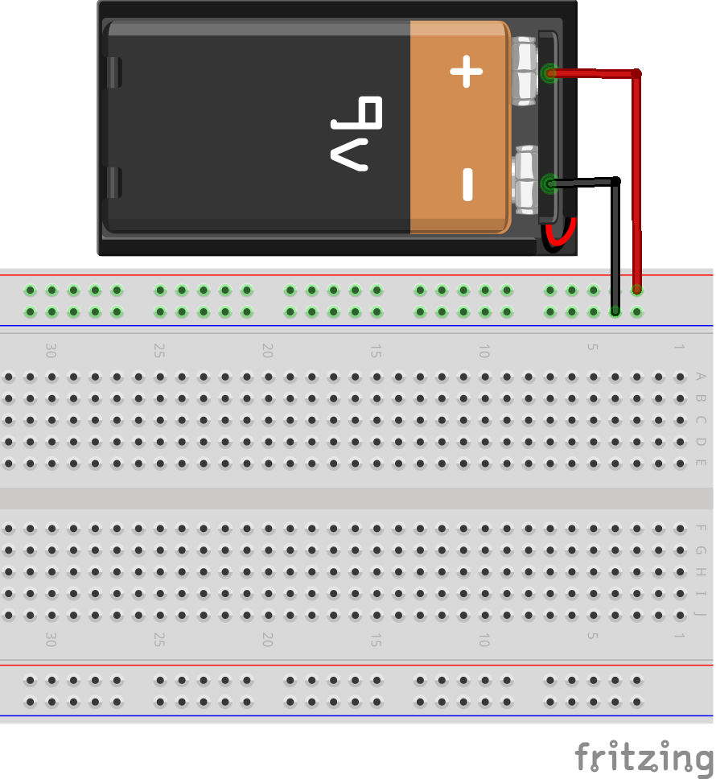
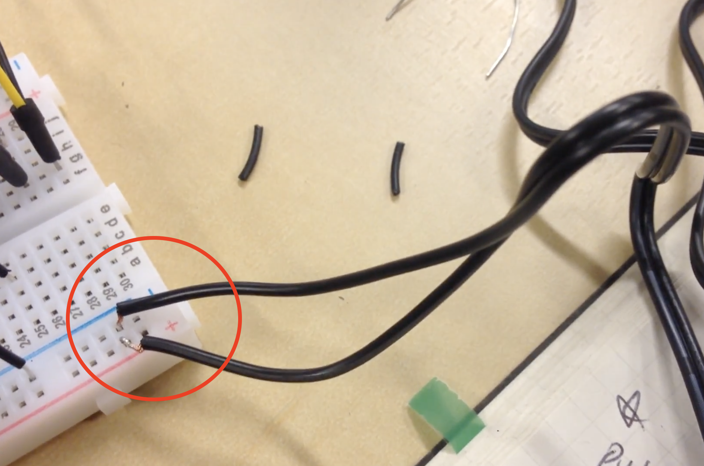
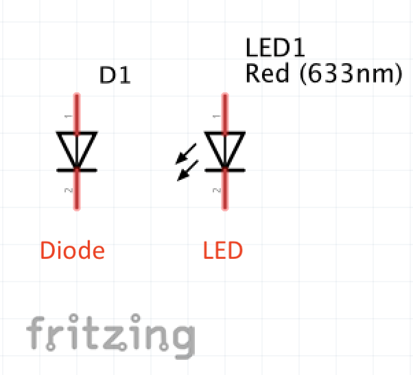
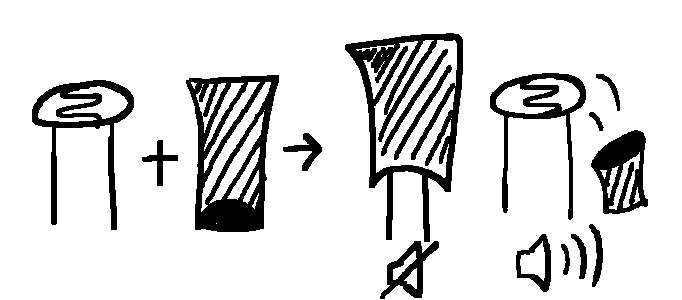

There are 2 different styles: US and European.
Check out this link, which gives an overview of the most used schematic symbols.
For further
information, I would recommend image searching with keywords of which you would like to know, or just 'schematic symbols.'
Schematic symbols

By Original:JleedevVector:DnetSvg at English Wikipedia [GFDL or CC-BY-SA-3.0], via Wikimedia Commons
Image search
If you get in stuck in the middle of building circuits, soldering or whatsoever, don’t hesitate to search for information!
Often it helps me a lot to use image searches on a web search engine.
From schematics and electronic parts to the way to build and connect circuits, just put the keywords and check the result on the image tab.
In this way, you would get it more fast and intuitively.
Often it helps me a lot to use image searches on a web search engine.
From schematics and electronic parts to the way to build and connect circuits, just put the keywords and check the result on the image tab.
In this way, you would get it more fast and intuitively.
Chip
When you work on a chip to make an analog synthesizer, it’s important to check the schematic of the chip and be acquainted with pinouts. Especially if the power connection goes wrong like as if the voltage and ground are connected in reverse, the chip will
be burnt and dead immediately.
So first, be careful not to confuse connection + with -, and then while connecting pinouts, just touch the chip with your finger and see if it gets hot. If your chip got burnt, it’s hard to reuse or bring back its life.
And when you buy chips, it would be wise to prepare at least 2 or more chips, just in case!

So first, be careful not to confuse connection + with -, and then while connecting pinouts, just touch the chip with your finger and see if it gets hot. If your chip got burnt, it’s hard to reuse or bring back its life.
And when you buy chips, it would be wise to prepare at least 2 or more chips, just in case!

By AndyDK at en.wikiversity(Original text : N/A) [CC BY-SA 2.5 ], from Wikimedia Commons
Resistor
How to know the value of resistors?
There is a way to calculate the value with the colors that resistors have. You can either calculate it by yourself or using calculators on the web.
Check this link if you would like to look into it.
Also, you can do an image search by tapping in like '10k ohm resistor’ when you just want to see what colors certain resistors have.
There is a way to calculate the value with the colors that resistors have. You can either calculate it by yourself or using calculators on the web.
Check this link if you would like to look into it.
Also, you can do an image search by tapping in like '10k ohm resistor’ when you just want to see what colors certain resistors have.
Audio jack
I've struggled a lot with audio jack.
Usually, a female audio jack would be needed for analog synth making, but according to what kinds of audio cable used with the speaker, you have to consider which audio jack to use.
There are 2 kinds of female audio jack, one is 3.5mm, and the other is 6.35mm.
So first check your speaker's(or headphone's) cable, and get the jack which matches with it.


But there are a variety of shapes both 3.5mm and 6.35mm cables have. And every product has different numbers of legs(sleeve and tips).
This made me struggled! Because we need to figure out which one is sleeve(to the ground) and which tip should go to the audio signal.
The best way is, ask the way to connect audio jack to the staff at the electronic shop if you buy it offline.
But if you get it online shop and don't know how to connect, one possible way would be to do image searching like as '6.35mm female audio jack wiring'. If you are lucky, you can find the image of the same product you have with the description of the signal connection.
From my experience, normally the outstanding or longer leg would be the sleeve(GND) for both 3.5mm and 6.35mm jacks. Nevertheless, check once more!
Usually, a female audio jack would be needed for analog synth making, but according to what kinds of audio cable used with the speaker, you have to consider which audio jack to use.
There are 2 kinds of female audio jack, one is 3.5mm, and the other is 6.35mm.
So first check your speaker's(or headphone's) cable, and get the jack which matches with it.
By sparkfun 'Audio Jack - 3.5mm TRRS (SMD)' and 'Audio Jack 3.5mm'

By ARitchie10 [CC BY-SA 3.0 ], from Wikimedia Commons
But there are a variety of shapes both 3.5mm and 6.35mm cables have. And every product has different numbers of legs(sleeve and tips).
This made me struggled! Because we need to figure out which one is sleeve(to the ground) and which tip should go to the audio signal.
The best way is, ask the way to connect audio jack to the staff at the electronic shop if you buy it offline.
But if you get it online shop and don't know how to connect, one possible way would be to do image searching like as '6.35mm female audio jack wiring'. If you are lucky, you can find the image of the same product you have with the description of the signal connection.
From my experience, normally the outstanding or longer leg would be the sleeve(GND) for both 3.5mm and 6.35mm jacks. Nevertheless, check once more!
Battery
While working on the circuit, you need to supply power. In this case, you can use either battery or power adapter. For making an analog synthesizer, in my experience, mostly 9v power would be needed.
So if you are using a 9v battery(the cuboid shape one), you will need a battery connector to hook it up on your breadboard or PCB(printed circuit board).
But you can use the 9v dc adapter as well. For this, you should cut out the plug, and strip a bit of the skin of wires. Sometimes there are 2 wires enclosed separately in the plastic surface, or 2-covered-wires are attached together. It depends on every adapter. Anyways, one of them is a voltage(+), the other is ground(-). If you are confused to figure out which is which, I would recommend image searching! Or you can ask an electricity expert or smart person around you as well.
When you try peeling off the skin of wires, the wire stripper will be helpful. (Scissors or cutter can be alternative, but not super handy!)
After finishing all the process, hook the voltage wire to + and the ground to - on your circuit.
It might be helpful to twist a bit the bare (a bundle of)wires with your hand in order to easily connect them to the board.
So if you are using a 9v battery(the cuboid shape one), you will need a battery connector to hook it up on your breadboard or PCB(printed circuit board).

But you can use the 9v dc adapter as well. For this, you should cut out the plug, and strip a bit of the skin of wires. Sometimes there are 2 wires enclosed separately in the plastic surface, or 2-covered-wires are attached together. It depends on every adapter. Anyways, one of them is a voltage(+), the other is ground(-). If you are confused to figure out which is which, I would recommend image searching! Or you can ask an electricity expert or smart person around you as well.
When you try peeling off the skin of wires, the wire stripper will be helpful. (Scissors or cutter can be alternative, but not super handy!)
After finishing all the process, hook the voltage wire to + and the ground to - on your circuit.

It might be helpful to twist a bit the bare (a bundle of)wires with your hand in order to easily connect them to the board.
Capacitor
Ceramic capacitor has no polarity. It is usually small - less than 1uF, and has a yellowish colored body. As they’re not polarized, you don’t have to consider the direction to put when connecting their legs on your circuit.
Usually, numbers marked on their heads don’t mean the value of capacitance of ceramic capacitors directly. So if you are not sure what value it has, please check it by searching on the internet or your reference.

Electrolytic capacitor has polarity. It has cylinder-shaped heads with two legs in different lengths - one is longer than the other. The shorter leg is negative, and the longer one is positive.
Electrolytic capacitors have bigger capacitance than ceramic. And unlike ceramic, ‘Farad’(uF) value is marked on the head of electrolytic capacitors.

Usually, numbers marked on their heads don’t mean the value of capacitance of ceramic capacitors directly. So if you are not sure what value it has, please check it by searching on the internet or your reference.

By oomlout (22 PF Capacitor - CAPA-22PF) [CC BY-SA 2.0 ], via Wikimedia Commons
Electrolytic capacitor has polarity. It has cylinder-shaped heads with two legs in different lengths - one is longer than the other. The shorter leg is negative, and the longer one is positive.
Electrolytic capacitors have bigger capacitance than ceramic. And unlike ceramic, ‘Farad’(uF) value is marked on the head of electrolytic capacitors.

By Markome [CC BY-SA 3.0 ], from Wikimedia Commons
Connecting diode or LED
Diode is a semiconductor element that makes current flow one direction, and not in reverse.

When you see the symbol of diode above, the current flows to the direction of the arrow. So you should make + to ‘Anode’ and - to ‘Cathode’, as electricity flows + to -.
Usually, a diode has a line on its cathode(-) side like as you see on the image above.
LED(light-emitting diode) has also the polarity. As its name implies, it is a diode as well.
LED has two legs, one is longer than the other. The longer one should be connected to positive(+), and the shorter one goes to negative(-).
The symbol basically looks the same as the diode but has two arrows facing outward.
When you use diode or LED on your circuit, make sure to put a resistor together in order to limit the current in the diode. Without the resistor, it will be burnt.
To know what resistor to use, check out this link. (for precise calculation)
Simple way:
We usually use a 9v battery for making analog oscillator, and you might have 1k, 10k, 47k, 100k, and 1M resistors if you follow my zine 'Analog Synthesizer - oscillator.' So you can just start with 1k ohm resistor together with your LED. The bigger the value of the resistor, the less bright the light of LED.

When you see the symbol of diode above, the current flows to the direction of the arrow. So you should make + to ‘Anode’ and - to ‘Cathode’, as electricity flows + to -.
Usually, a diode has a line on its cathode(-) side like as you see on the image above.
LED(light-emitting diode) has also the polarity. As its name implies, it is a diode as well.
LED has two legs, one is longer than the other. The longer one should be connected to positive(+), and the shorter one goes to negative(-).
The symbol basically looks the same as the diode but has two arrows facing outward.

When you use diode or LED on your circuit, make sure to put a resistor together in order to limit the current in the diode. Without the resistor, it will be burnt.
To know what resistor to use, check out this link. (for precise calculation)
Simple way:
We usually use a 9v battery for making analog oscillator, and you might have 1k, 10k, 47k, 100k, and 1M resistors if you follow my zine 'Analog Synthesizer - oscillator.' So you can just start with 1k ohm resistor together with your LED. The bigger the value of the resistor, the less bright the light of LED.
Photoresistor
‘Photoresistor' or ‘photocell' or 'light-dependent resistor(LDR)' is a resistor of which the value of resistance being changed by the light intensity. When it’s dark, the resistance becomes high, but when photoresistors are exposed to light, the resistance
decreases.
Both sides of the disc can be affected by the light as it is translucent, but the front side, which has a curvy pattern is more sensitive.

If you want to use the resistance of photoresistor from maximum to minimum so that you can control various range of frequency, there are some tips.
For example, put something dark behind the photocell or work completely in a dark environment to block additional light. Then use flashlight towards photoresistors to control the illuminance.
Or one common way is, to make a little black tube to cover the other side of the photoresistor’s disc.
The picture below is a part of my 'bleep bag’, one of my e-waste instruments.
I put photoresistors inside the paper cups painted with black inside. So the cups block any light coming from behind.

Both sides of the disc can be affected by the light as it is translucent, but the front side, which has a curvy pattern is more sensitive.

By Arnau 944 [CC BY-SA 4.0 ], from Wikimedia Commons
If you want to use the resistance of photoresistor from maximum to minimum so that you can control various range of frequency, there are some tips.
For example, put something dark behind the photocell or work completely in a dark environment to block additional light. Then use flashlight towards photoresistors to control the illuminance.
Or one common way is, to make a little black tube to cover the other side of the photoresistor’s disc.

The picture below is a part of my 'bleep bag’, one of my e-waste instruments.
I put photoresistors inside the paper cups painted with black inside. So the cups block any light coming from behind.
Alligator clips
When you work on a breadboard before really transplant complete circuit on the PCB, usually you would not need to solder to connect wires, because you can just use jumper wires.
However, in the case of connecting audio jack, it seems like we cannot help but do soldering it with wires… But, luckily we can use alligator clips instead of (annoying) soldering!
When I try out something, I like using alligator clips in order to connect stuff. But hooked up with alligator clips, the signals might be a bit unstable.
However, in the case of connecting audio jack, it seems like we cannot help but do soldering it with wires… But, luckily we can use alligator clips instead of (annoying) soldering!
When I try out something, I like using alligator clips in order to connect stuff. But hooked up with alligator clips, the signals might be a bit unstable.
Take pictures for documentation
For those who are not familiar with the circuit and even don't have a super great powerful memory, I always recommend taking pictures of your working process.
As it would look very messy when the circuit on the breadboard covered with wires, take pictures with different angles. Also, it's good to shoot video to get the sounds you made.
The photos really help when you build it later again or when you transplant the complete circuit on to the PCB(printed circuit board) for soldering!
As it would look very messy when the circuit on the breadboard covered with wires, take pictures with different angles. Also, it's good to shoot video to get the sounds you made.
The photos really help when you build it later again or when you transplant the complete circuit on to the PCB(printed circuit board) for soldering!
References for Analog Oscillator
- Handmade Electronic Music by Nicolas Collins
I refer a lot to this book for experimenting with circuits. It has very detailed explanations and kind and humorous guidelines for beginners. - Tutorial for DIY synth bulding(oscillator) by Bastl Instruments
- Tutorial for oscillator by Hackaday.com
- Skating the Circuits by Taeyoon Choi
Theoretical reference. Friendly illustrating how the circuits and electricity work by the analogy of skateboarding.